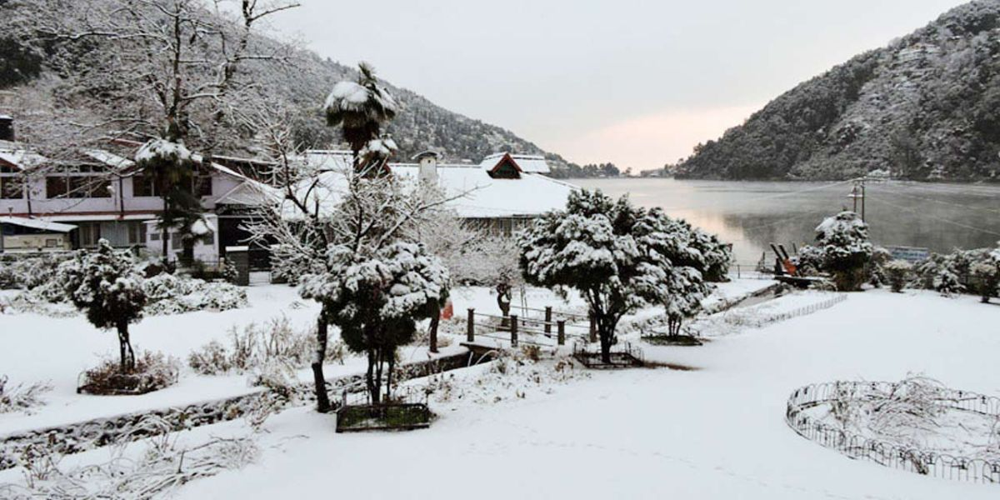
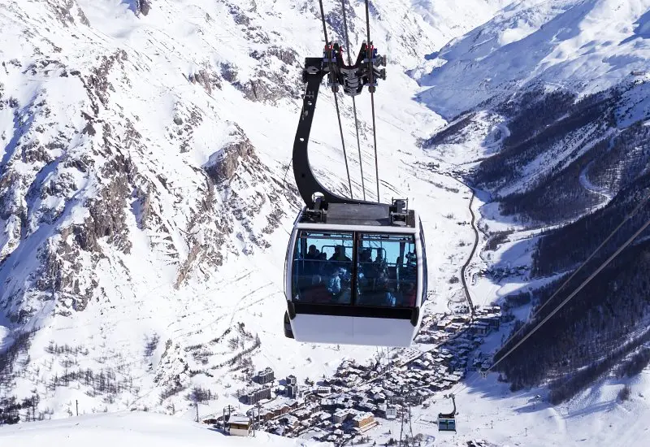
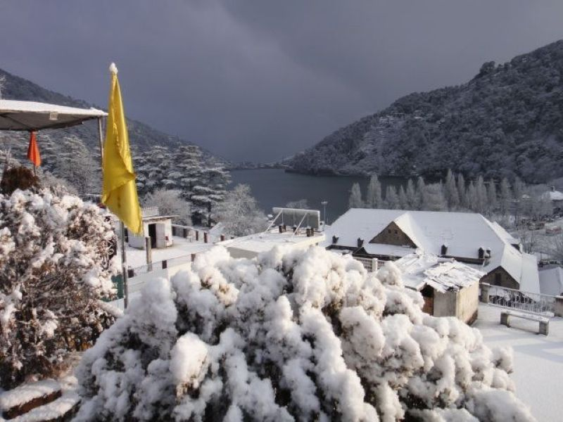
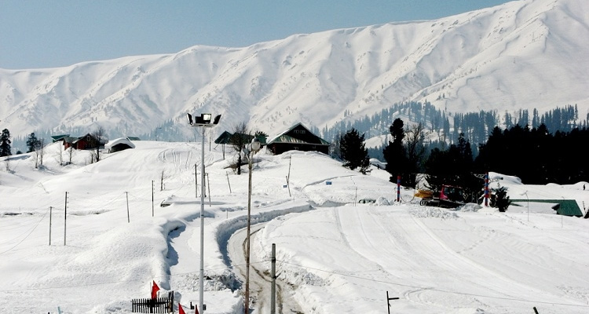

Snow View Point is one of the most popular and breathtaking viewpoints in Nainital, perched at an altitude of about 2,270 meters on the Himalayan foothills. Accessible via the famous ropeway (cable car) from Mall Road, this spot offers panoramic 360-degree views of the snow-capped Himalayan peaks, including Nanda Devi, Trishul, Nanda Kot, and Panchachuli ranges on clear days. The name "Snow View" comes from the dazzling snow-covered mountains that shimmer in the sunlight, creating a magical and serene spectacle.
At the top, visitors can enjoy the crisp mountain air, colorful prayer flags fluttering in the wind, small eateries serving hot tea and maggi, and a peaceful ambiance perfect for photography and quiet reflection. The ropeway ride itself is an adventure, gliding over pine forests and offering aerial views of Naini Lake and the town below. On winter mornings or after snowfall, the entire landscape turns into a white wonderland — a true highlight of Devbhoomi Uttarakhand.
October to March for snow-covered peaks and clear skies; early morning for the best visibility and fewer crowds.
Ropeway ride, 360° Himalayan views, snow in winter, prayer flags, telescopes for peak spotting, and a small amusement area for kids.
Wear warm clothes in winter, carry sunglasses for snow glare, visit early to avoid long ropeway queues, and don’t miss sunrise/sunset views.
"Snow View Point is where the sky meets the snow — a place where the grandeur of the Himalayas whispers peace, wonder, and the timeless magic of Devbhoomi."